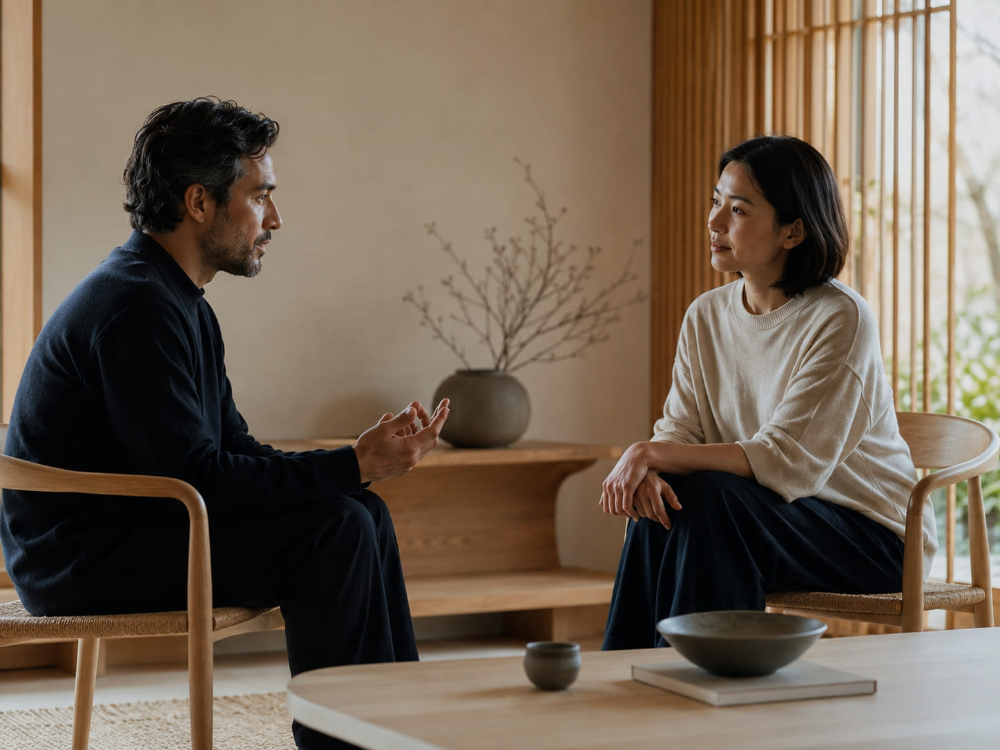
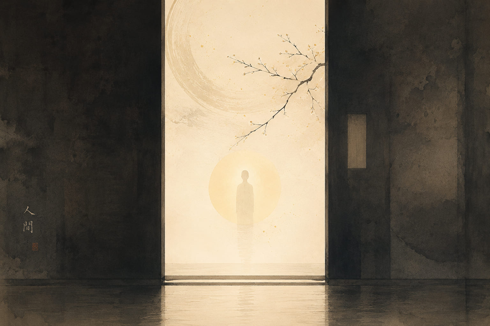
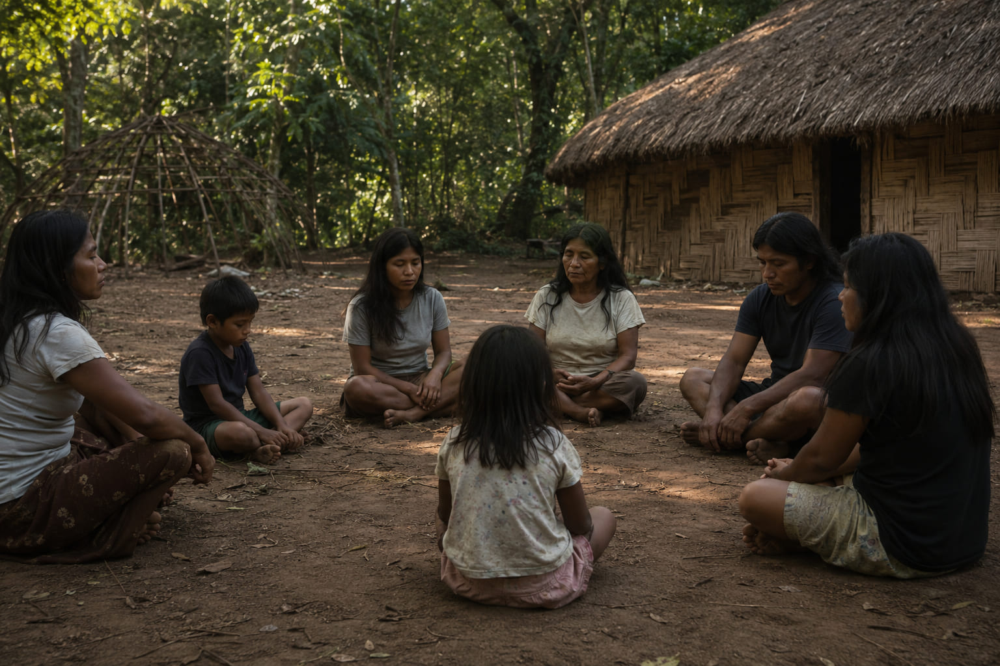
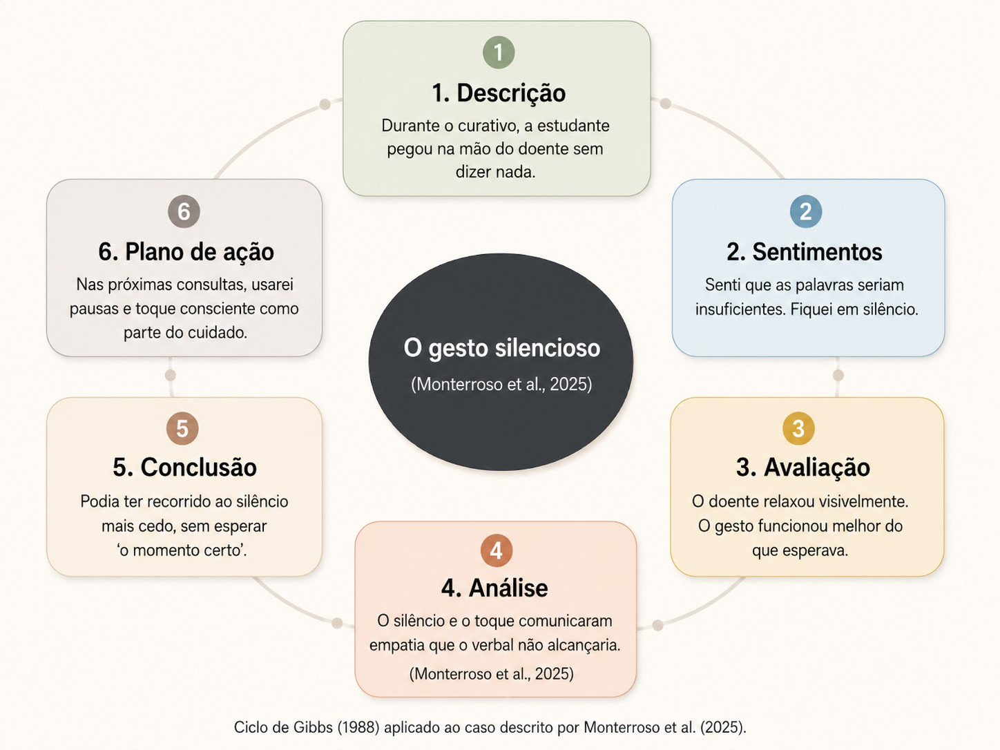

Linguística · Culturas Indígenas e Afro-brasileiras · Comunicação em Saúde · Feridas Crônicas
O silêncio não é ausência de comunicação — é uma de suas formas mais complexas. Do ma japonês ao nhe'e Guarani, do Awo do terreiro ao silêncio compassivo da clínica: aprender a lê-lo pode transformar o cuidado de pessoas com feridas crônicas.
O problema que ninguém nomeia
Um dos mal-entendidos culturais mais profundos e menos estudados é a relação que cada língua mantém com o silêncio. Estudos interculturais mostram que falantes de espanhol e português sentem desconforto após apenas 2 segundos de silêncio numa conversa, ao passo que finlandeses toleram pausas de até 10 a 15 segundos sem qualquer estranhamento.El Confidencial, 2026
Essa diferença não é trivial. Ela determina se um profissional de saúde sabe criar espaço para o paciente — ou se preenche ansiosamente cada pausa, perdendo o que aquele silêncio queria dizer. Em culturas mediterrâneas e latinas, o silêncio precisa ser explicado e justificado; a ausência de fala é lida como sinal de que "algo está errado".El Confidencial, 2026

Limiar de desconforto em conversas para falantes de português e espanhol — típico de culturas mediterrâneas e latinas
Pausa natural e confortável para falantes de finlandês — o silêncio como escuta, não como falha comunicativa
Proporção de silêncio em consultas médico-paciente no Japão, contra 8,2% nos EUA — médicos japoneses dedicam mais tempo ao exame físico e diagnóstico; americanos, à conversa socialOhtaki et al., 2003 [15]
O conceito-chave
O ideograma representa o sol (日) passando por um portal (門). Não é o vazio — é o intervalo ativo que confere sentido ao que está antes e depois.
Em japonês, ma (間) não encontra equivalente em nenhuma língua europeia. Não é apenas "pausa" — é a presença ativa do silêncio, um elemento que estrutura a música, a arquitetura, o teatro e a conversa cotidiana.El Confidencial, 2026 Pesquisadores brasileiros descrevem o conceito como "um vazio que opera, um silêncio que fala" — um espaço intermediário entre dois elementos que não é ausência, mas possibilidade.Okano, 2011; Choairy, 2020
Na conversa japonesa, interromper o silêncio do outro antes do tempo é descortesia: significa não ter escutado até o fim, não ter deixado as palavras chegarem ao destino. Para o budismo zen, o silêncio não é ausência — é plenitude. Falar em excesso é quase um defeito espiritual, sinal de que algo interno ainda não está quieto.El Confidencial, 2026
A palavra japonesa para "ser humano" é 人間 (ningen) — literalmente "pessoa + ma". O indivíduo é constituído desse intervalo, dessa pausa interior. Um sem ma seria alguém sem timing, sem sensibilidade — há um insulto japonês que significa exatamente isso: ma ga nuketa ("escapou o ma"). O silêncio não é o que falta ao humano: é parte do que o constitui.Okano, 2011

Atlas do silêncio
O silêncio não tem um único significado. Seu sentido muda conforme quem cala, com quem, em que momento e dentro de qual gramática cultural. Para um negociador ocidental treinado em comunicação direta, as pausas do Sudeste Asiático — onde o silêncio é uma forma sofisticada de dizer "não" sem dizê-lo — são invisíveis até que se aprenda a lê-las.El Confidencial, 2026
O silêncio é respeito e atenção cuidadosa. Em consultas médicas, representa 30% do tempo de conversa (vs. 8,2% nos EUA) — médicos japoneses concentram-se no exame e diagnóstico; americanos, na conversa social e follow-up.Ohtaki et al., 2003 [15] Interromper a pausa do outro é descortesia — significa não ter escutado até o fim.Petkova, 2015 [4]
Alta tolerância"A palavra é prata, o silêncio é ouro" (Puhuminen on hopeaa, vaikeneminen kultaa). Num estudo empírico com 200 finlandeses e 200 búlgaros, as palavras mais usadas pelos finlandeses para se descreverem foram "silencioso", "calmo" e "tímido" — o silêncio é tanto hetero como auto-estereótipo na identidade finlandesa.Petkova & Lehtonen, 2005 via [4] Carbaugh et al. (2006) definem-no como "a Finnish natural way of being": estar só não é solidão — é recolhimento ao espaço escolhido pelo próprio.[16]
10–15s confortáveisEstudados por Keith Basso, o silêncio era a resposta apropriada em situações de incerteza: início de namoro, reencontros, luto. Falar nesses momentos era sinal de que não se compreendia a gravidade da situação.El Confidencial, 2026 [8]
Silêncio como protocoloPara os Guarani Mbyá, o silêncio não é ausência de palavra — é o espaço interior onde a palavra-alma (nhe'e) se forma antes de ser pronunciada. Apenas a palavra nascida desse silêncio interior merece ser dita. O silêncio funciona também como invisibilidade estratégica: resistência silenciosa à exposição colonial.Melo, UFSC, 2008 [13]; Chamorro, 2009 [14]
Silêncio como almaNa cosmovisão iorubá do Batuque gaúcho, o silêncio tem nome: Awo — o segredo. A oralidade é sagrada; o desperdício de palavras é falha de caráter. O iniciado aprende antes de tudo a ouvir e a calar: "Quem fala muito, dá bom dia a cavalo." A iniciação inclui um período de silêncio absoluto — condição para renascer como instrumento do Orixá.Historiando Axé, 2025 [17]
Silêncio como fundamentoFalar é relacionar-se; o silêncio precisa ser explicado. A pergunta inevitável quando alguém cala onde não é norma: "o que foi?". A conversa sobre o tempo ou a comida não transmite informação — afirma que "estamos bem, somos isso".El Confidencial, 2026 [8]
~2s de tolerânciaNa cosmologia Guarani Mbyá, os termos ñe'ë, ayvu e ã — traduzidos como "palavra" — significam também alma, nome, vida, origem e personalidade, possuindo uma essência espiritual: para os Guarani, Deus é palavra.Chamorro, 2009 [14] Isso cria um paradoxo fascinante: um povo que valoriza profundamente o silêncio tem toda a sua cosmologia organizada em torno da palavra como princípio vital.
A resolução do paradoxo está no silêncio interior. O nhe'e não se pronuncia levianamente — apenas a palavra que nasce de dentro, do silêncio de si mesmo, merece ser dita. Falar sem esse silêncio preparatório é desperdiçar axé vital. A dissertação Corpos que falam em silêncio: escola, corpo e tempo entre os Guarani (Melo, UFSC, 2008)[13] documenta como o corpo Guarani comunica pelo silêncio o que a escola ocidental exige em palavras — e como esse choque produz incompreensão pedagógica profunda.
O silêncio Guarani tem ainda uma dimensão política: funciona como invisibilidade estratégica — recolher-se ao silêncio é proteger o que é sagrado de ser nomeado e, portanto, capturado.Cadernos de Tradução, SciELO [13]

A professora Michiko Okano — autora do livro Ma citado neste infográfico — explica o conceito em vídeo produzido pela Japan House São Paulo. Abaixo do vídeo, um contraste textual entre a gramática japonesa e a gramática latina diante do mesmo silêncio clínico.
Enfermeiro pergunta: "Como está a ferida?" Paciente cala por 3 segundos. Enfermeiro imediatamente: "Ainda dói muito? Vamos ver o que podemos fazer—" A pausa não chegou ao fim. O que o paciente queria dizer ficou por dizer. O profissional preencheu o espaço com ansiedade própria, não com escuta.
Enfermeiro pergunta. Paciente cala. Enfermeiro aguarda — 5, 8, 10 segundos. O paciente respira fundo e diz algo que não diria sem aquele espaço. O silêncio não foi vazio: foi o tempo que a resposta verdadeira precisou para chegar à superfície. O enfermeiro ouviu mais do que perguntou.
Petkova (2015)[4] propõe uma terceira hipótese que une todas as tradições aqui apresentadas: o silêncio pode expressar sentimentos que são simultaneamente individuais e universais — empatia, compaixão, amor, dor, tristeza — e que não dependem de nenhuma cultura específica. O silêncio compassivo de Back et al. (2009), o ma japonês, o nhe'e Guarani e o Awo do terreiro convergem nesse ponto: há um silêncio humano que precede qualquer gramática cultural — e é precisamente esse o silêncio que cura.
Silêncio de matriz africana — Pelotas e Rio Grande do Sul
As religiões de matriz africana praticadas em Pelotas — Batuque, Umbanda e Quimbanda — têm uma relação com o silêncio que não é paralela ao silêncio zen ou finlandês: é estruturalmente diferente e igualmente sofisticada. Aqui o silêncio é fundamento litúrgico, condição de iniciação e prática de cura — e o seu oposto não é o barulho, mas a palavra mal usada.
Na cosmovisão iorubá que fundamenta o Batuque gaúcho — a expressão mais africana do complexo afro-religioso do Rio Grande do Sul, com liturgia em iorubá e orixás como entidades centraisGiumbelli & Almeida, Rev. Antropologia USP, 2021 [16b] — o silêncio tem nome: Awo, o segredo. Dentro da dinâmica do terreiro, a oralidade é sagrada e o desperdício de palavras é visto como uma falha de caráter e sabedoria. O iniciado aprende, antes de tudo, a ouvir e a calar. Há um ditado nas casas de santo que resume essa ética: "Quem fala muito, dá bom dia a cavalo."Historiando Axé, 2025 [17]
O silêncio não é ausência de axé — é sua preservação. Verbalizar planos, conquistas ou fundamentos antes do tempo certo é um erro litúrgico grave que enfraquece a energia individual e a conexão com o próprio Orí (a cabeça espiritual). O treinamento ritualístico do silêncio visa garantir que a bússola moral e espiritual do indivíduo seja interna — não refém da validação externa.[17]
No rito de iniciação do Batuque e da Umbanda — a feitura de santo — o iniciado passa por um período de silêncio absoluto, isolamento e recolhimento. É uma morte simbólica: tudo que era antes precisa ser silenciado para que o novo possa nascer. O silêncio não é punição — é o útero onde o iniciado se refaz como instrumento do Orixá.[18]
Ao final de cada cerimônia, quando o silêncio volta a tomar conta do terreiro, a sensação é a de que ali, nesse espaço repleto de axé, entre os tambores e as oferendas, uma pequena parte de todos foi curada.UFRGS/Sextante, 2024 [19] O silêncio na escuta do terreiro não é ausência — é preparo: solo fértil onde a palavra encantada pode brotar. O terreiro oferece há gerações o que a clínica ocidental hoje reconhece como silêncio terapêutico: presença plena, escuta sem julgamento, espaço para que o outro fale quando estiver pronto.Projeto Aquilombamente, 2025 [20]
O que a ciência já sabe
A literatura científica em enfermagem, medicina paliativa e psicoterapia converge numa conclusão: o silêncio não é o oposto da comunicação terapêutica — é uma de suas formas mais poderosas. Mas usá-lo bem exige habilidade deliberada, não apenas ausência de fala.
Artigo publicado na Nursing Standard (2016; PMID: 27794696)Back et al., 2009 [1] descreve o silêncio intencional como uma forma de presença terapêutica que demonstra compaixão e respeito. O silêncio intencional pode (a) fortalecer a relação terapêutica enfermeiro-paciente, (b) reduzir a labilidade emocional do paciente ao fazê-lo sentir-se escutado, e (c) apoiar o paciente na compreensão e reflexão sobre mudanças em sua saúde. Os autores alertam: ordenar ao profissional que "use o silêncio" como técnica comportamental gera uma nova dificuldade — o profissional fica visivelmente desconfortável, e essa atmosfera de estranhamento pesa sobre paciente e clínico. O silêncio eficaz nasce de uma qualidade de mente, não de um comportamento.
Back et al. (2009)J Palliat Med, 12(12):1113-7, num artigo seminal no Journal of Palliative Medicine, propuseram a distinção entre tipos de silêncio clínico e introduziram o conceito de silêncio compassivo — derivado da prática contemplativa — como aquele que "afirma relacionamento e compreensão, e permite que a sabedoria mútua emerja". Os autores observam que o silêncio do clínico é em grande parte responsável pelo efeito que o silêncio produz no encontro. A capacidade de atenção genuína — dar atenção com o propósito de compreender o outro — é pré-requisito para que momentos de silêncio terapêutico se tornem possíveis.
Paciente processa informação ou emoção difícil. Interrompê-lo é perder o que está sendo elaborado internamente.Back et al., 2009
Pausa carregada de emoção partilhada entre clínico e paciente — marcador de presença e compreensão mútua.Gramling et al., 2022
Pausa usada pelo clínico para abrir espaço ao paciente, sinalizar que há tempo e que ele pode continuar.Gramling et al., 2022
Paciente evita falar sobre algo — consciente ou inconscientemente. Deve ser percebido, não preenchido precipitadamente.Back et al., 2009
Bassett, Bingley & Brearley (2018)Palliat Med, 32(1):185-194, numa revisão meta-etnográfica publicada na Palliative Medicine envolvendo oito bases de dados interdisciplinares, concluíram que pesquisa e prática interdisciplinares internacionais endossam o valor do silêncio no cuidado clínico. A experiência de silêncio como elemento de cuidado foi encontrada em cuidados paliativos, cuidado espiritual, psicoterapia e aconselhamento — apoiando o reconhecimento do silêncio como habilidade e prática. Os autores ressaltam, porém, que o silêncio pode representar desafios para cuidadores, e que sua maior compreensão pode oferecer benefícios para a prática clínica.
Gramling et al. (2022)Patient Educ Couns, 105(7):2005-2011 audio-gravaram 226 consultas de cuidados paliativos em dois centros acadêmicos e identificaram 6.769 pausas de 2+ segundos. Entre elas, 328 (4,8%) foram classificadas como Silêncios Emocionais de Conexão (ECS) e 240 (3,5%) como Silêncios-Convite (ICS). O achado central: ECS mais precoce na consulta associou-se à melhora da qualidade de vida do paciente no dia seguinte (p = 0,01). Além disso, maior prevalência de ECS associou-se a decisões terapêuticas que priorizavam o conforto em detrimento de tratamentos mais agressivos — sugerindo que o silêncio compassivo facilita a tomada de decisão centrada no paciente.
Uma revisão narrativa publicada na RIAGE – Revista Ibero-Americana de Gerontologia (2025)Franzoni et al., 2016 [10] — Peplau, à luz da Teoria das Relações Interpessoais de Peplau, categorizou o papel do silêncio em quatro fases da relação terapêutica:
Orientação: o silêncio prepara a comunicação oral, promovendo introspecção e confiança — base do vínculo inicial.
Identificação: apoia a autonomia emocional do paciente, em consonância com a adaptação às suas necessidades subjetivas.
Exploração: favorece a introspecção e a exploração de sentimentos complexos, refletindo a projeção de novos objetivos.
Resolução: o silêncio proporciona serenidade e conforto, facilitando a aceitação da mudança e a autonomia no cuidado.
Conclusão da revisão: o silêncio transcende a função técnica, sendo recurso multifacetado que contribui para a humanização do cuidado.
Nem todo silêncio clínico é terapêutico. A conspiração do silêncio — quando familiares solicitam que profissionais omitam informações de diagnóstico e prognóstico do paciente, como ato protetor — tem alta incidência em cuidados paliativos brasileiros.Machado et al., 2019 – SciELO CR Revisão integrativa na BVS (Machado et al., 2019) mostrou que pacientes envolvidos nessa dinâmica sentem-se isolados, incompreendidos, enganados, ansiosos e deprimidos — impedidos de encerrar assuntos importantes ou de se despedir. A comunicação ineficaz contribui diretamente para a falta de informação entre equipe, paciente e família. Há necessidade urgente de aprender a ouvir — não apenas falar.
Aplicação prática — G10 PET-Saúde UFPel
O paciente com ferida crônica carrega um peso que vai muito além da lesão visível. Estudos brasileiros mostram que úlceras venosas, pé diabético e lesões por pressão causam dor crônica, alteração da imagem corporal, isolamento social, depressão e perda da autoestima — realidade psicoemocional que frequentemente fica silenciada nas consultas.ver nota: referências não verificadas
A comunicação eficaz no manejo de feridas crônicas vai além do plano técnico: sem estratégias comunicativas adequadas surgem atrasos no tratamento, orientações inconsistentes e cuidado fragmentado.Bassett et al., 2018 [3] O silêncio bem usado — distinto do silêncio de evitação ou de ansiedade — é parte dessas estratégias.
Relato de experiência publicado na ARACÊ (2025)Monterroso et al., 2025 [11] com pessoa portadora de ferida crônica demonstrou que a linguagem corporal, o silêncio e a escuta ativa mostraram-se elementos centrais na construção de uma relação humanizada, destacando que o cuidar ultrapassa o verbal. O simples gesto silencioso da mão de uma estudante de enfermagem transmitiu empatia e segurança que palavras não alcançariam.
O curativo é um momento fisicamente íntimo e frequentemente doloroso. Diretrizes de feridas (USP/EERP) orientam que os profissionais não devem assumir que a dor não existe pelo fato de o paciente não expressar ou não responder.Ref. [9] — EERP-USP O silêncio do paciente durante o procedimento pode ser sinal de dor não verbalizada, medo ou constrangimento. Respeitar essa pausa — sem preenchê-la automaticamente com orientações técnicas — cria espaço para que ele sinalize o que sente.
Na chamada de vídeo, o silêncio tende a ser interpretado como falha técnica. Mas muitas vezes é hesitação — o paciente a ponto de revelar uma dificuldade real (falta de insumos, dor não relatada, medo de amputação). Esperar 4 a 5 segundos antes de reformular a pergunta pode ser a diferença entre uma resposta superficial e uma informação clínica essencial.Gramling et al., 2022 — adaptado O silêncio-convite (ICS) é uma habilidade comunicativa treinável no contexto do telemonitoramento.
Ao orientar sobre autocuidado, use pausas deliberadas após informações-chave — o equivalente clínico do ma japonês. Deixar a informação "pousar" antes de continuar aumenta a assimilação. Perguntar "o que ficou de dúvida?" e então aguardar em silêncio — sem já responder — é mais eficaz do que cobrir o espaço com mais explicações.Back et al., 2009 [1] — adaptado
Feridas crônicas exigem tratamento prolongado. O vínculo terapêutico — construído também por presença silenciosa, por não julgar, por estar junto na dor sem pressa de resolvê-la — é fator determinante para adesão.ver nota: referência não verificada Saber calar ao lado de um paciente que chora durante um curativo é tão clínico quanto saber escolher a cobertura adequada. Estudos de enfermagem paliativa reforçam: o silêncio acompanhado é intimidade terapêutica — estar no mesmo lugar, na mesma emoção, sem palavras.Bassett et al., 2018
O relato de Monterroso et al. (2025)Monterroso et al., 2025 [11] foi estruturado segundo o Ciclo de Gibbs (1988) — modelo de reflexão em seis etapas amplamente usado na formação em enfermagem para transformar experiência vivida em aprendizagem transferível. A figura abaixo aplica esse ciclo ao momento central do artigo: o gesto silencioso da estudante de enfermagem junto ao doente com ferida crónica.

O que fica na cabeça
Vivemos uma época que declarou guerra ao silêncio. Os telefones preenchem os intervalos, as cidades atingiram níveis de ruído inimagináveis para gerações anteriores.El Confidencial, 2026 Nesse contexto, saber calar com intenção é quase uma forma de resistência — e, na clínica, uma competência que pode ser ensinada e praticada.
Para o cuidado de feridas crônicas — marcado por dor prolongada, vulnerabilidade emocional, alteração da imagem corporal e necessidade de vínculo duradouro — a gramática do silêncio é uma competência clínica tão relevante quanto o conhecimento sobre coberturas e protocolos. A evidência científica disponível é clara:Back 2009; Gramling 2022; Bassett 2018; RIAGE 2025
① O silêncio intencional fortalece o vínculo terapêutico e reduz a labilidade emocional do paciente.
② Silêncios de conexão (ECS) mais precoces na consulta associam-se à melhora mensurável da qualidade de vida.
③ O silêncio é habilidade treinável — não comportamento passivo — e envolve qualidade de atenção, não apenas ausência de fala.
④ A conspiração do silêncio — o silêncio que oculta informação — é nociva e tem alta incidência no contexto brasileiro.
Integrar o silêncio terapêutico como habilidade explícita na formação e nas teleconsultas do telemonitoramento pode melhorar adesão ao tratamento, fortalecer o vínculo e capturar informações clínicas que, sem esse espaço intencional, nunca seriam ditas.
Referências
Todas as referências abaixo foram verificadas. Itens de base jornalística e institucional estão identificados como tal.
Para ver e sentir
Há dimensões do silêncio clínico que os artigos nomeiam mas não transmitem. Estes dois filmes habitam-nas.
Para fixar e refletir
Clique em cada questão para revelar uma pista de onde buscar na memória.
Não há resposta certa. Essas perguntas existem para incomodar um pouco.